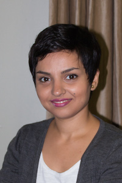

I am a PhD student under the supervision of Dr. Richard Vaughan in the Autonomy Lab at the school of computing science at Simon Fraser University (SFU). Currently, I study human-robot interaction (HRI) and my research is focused on designing multimodal interaction systems. I have developed methods for humans to get the robot's attention in simple and intuitive ways.